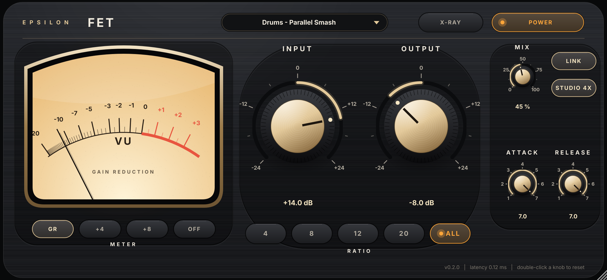
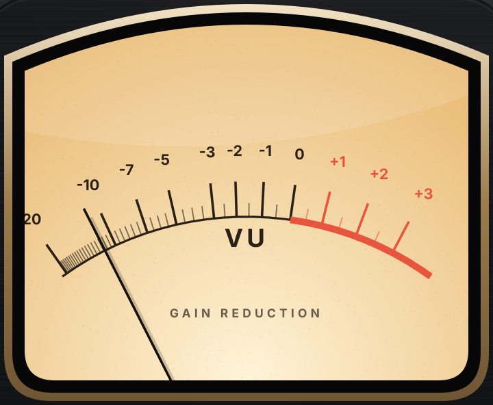
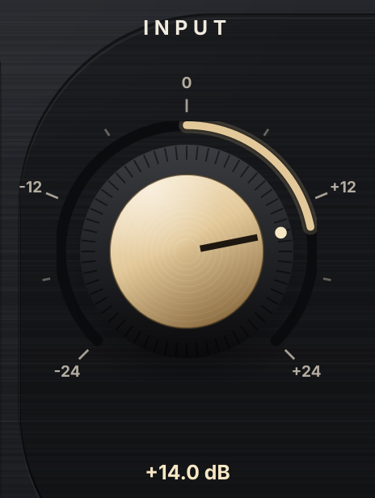
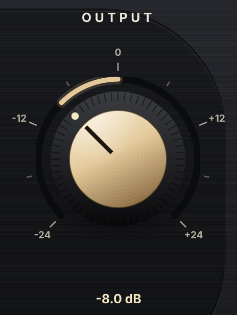
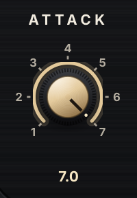
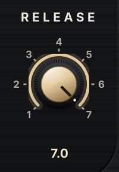
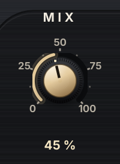
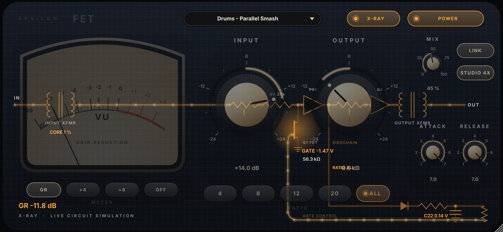

Epsilon FET is a compressor modelled on the 1176 Rev D family. Instead of imitating the sound with curves, it simulates the circuit itself: the FET, the detector capacitor, the diodes, the transformers and the output transistor are each solved as electrical parts in volts and ohms, thousands of times per millisecond. The character (the fast grab, the bass grit, the all-buttons aggression) comes out of the circuit, the way it does on the hardware.

12345678910111213Factory starting points, in the amber display at the top. They set Input, Output, Attack, Release, Ratio and Mix; they never touch Power, Link or Quality. They also appear in your DAW's program list.
Lamp lit = processing. Lamp off = bypass. The latency stays the same either way, so switching it in and out stays in time.
Try: match the level with Output first, then compare with Power off.

A real VU ballistic (about 300 ms rise, slight overshoot). In GR mode the needle rests at 0 and falls left as the FET turns the signal down: −5 means 5 dB of gain reduction. In +4 and +8 modes it shows the output level, with 0 VU at +4 or +8 dBu (a −18 dBFS peak sine is +4 dBu).
Chooses what the VU meter shows. Saved with the session; it doesn't change the sound.

How hard the signal is driven into the FET. Like the hardware, the threshold is fixed: turn Input up for more compression. With Input at 0 dB, compression starts around −26 dBFS at 4:1 (higher at higher ratios).
Try: vocals: raise Input until the meter dips 3–7 dB on loud words, then set Output to match.

Level after the compressor, before the class-A output stage and output transformer. Use it to make up the level the compression took away. Pushed very hard, the output stage itself starts to saturate.

How fast the FET clamps down. 7 is fastest, 1 is slowest, as on the hardware. The detector time constant runs from 20 µs (7) to about 0.8 ms (1). Slower attack lets the front of drum hits and consonants through.
Try: 1–3 on drums to keep punch; 5–7 to catch peaks.

How fast it lets go: about 50 ms at 7 to 1.1 s at 1 (the 5 MΩ release pot in the circuit). Fast release on bass makes the FET ripple inside each cycle, which adds the hardware's famous low-end grit.
Try: 7 for an aggressive, breathing sound; 3–4 for smooth vocals; 1–2 for slow levelling.

Blend of compressed and original signal (parallel compression). The original goes through the same oversampling filters, so the blend never comb-filters and adds no extra delay.
Try: All buttons, attack 7, release 7, Mix 30–50 % on a drum bus.
On: both channels share one detector capacitor, so the stereo image stays put. Off: each side compresses on its own.
The rate the circuit is simulated at. Studio runs it at 4× the host rate (best accuracy, lowest aliasing); Eco at 2× uses about half the CPU, for big sessions. Latency is about 0.1 ms either way.
Selects the ratio network in the sidechain. Higher ratios also raise the threshold, as on the hardware. ALL is the famous all-buttons-in trick: the networks load each other, the threshold drops, attack speeds up and it gets loud and aggressive.
Try: 4 for vocals and bass, 8–12 for tighter control, 20 as a peak limiter, ALL for room mics and smashed drums.
Turns the faceplate into smoked glass and shows the circuit being simulated, live, with every part sitting behind the control that drives it:

X-ray is a view only: the sound is identical either way. It redraws the whole window, so leave it off in big sessions on older computers.
From tests/measure_engine.py (full report: docs/measurements.md). These are measurements of the model against the published 1176 specifications, not against a particular hardware unit.
| Test | Result | Published 1176 |
|---|---|---|
| Attack, knob 7 → 1 | 100 µs → 760 µs to 63 % on a 1 kHz step (detector RC 20 µs → 0.8 ms) | 20 µs – 800 µs |
| Release, knob 7 → 1 | 52 ms → 1.09 s to 63 % recovery | 50 ms – 1.1 s |
| Ratios (slope above the knee) | 4.4 / 12 / 15 / 24 : 1 | 4 / 8 / 12 / 20 : 1 (nominal) |
| Distortion, compressor off, +4 dBu | 0.10 % (mostly 2nd harmonic) | < 0.5 % |
| Distortion, 4:1, ~4 dB GR | 0.25 % | < 0.5 % |
| Bass, 50 Hz, attack/release 7 | 4.7 % (3rd harmonic) | known low-end grit |
| Aliasing, 15 kHz at heavy GR | below −100 dBFS | – |
| Latency | 6 samples at 48 kHz (0.12 ms) | – |
The 8, 12 and 20 buttons come out steeper than their nominal ratios over the measured range; the 4 button is close to 4:1. Feedback FET compressors are not exact-ratio devices, and the published ratios are nominal.
| Preset | Settings |
|---|---|
| Init | Everything at default. |
| Vocal - Classic | 4:1, attack 3, release 7, Input +8. |
| Vocal - Upfront | 8:1, attack 5, release 6, Input +12: bright and in your face. |
| Bass - Even | 4:1, slow attack 2, release 4: evens notes, keeps the pluck. |
| Drums - Parallel Smash | All buttons, 7/7, Input +14, Mix 45 %. |
| Room Mics - All In | All buttons, 7/7, Input +14, full wet. |
| Snare - Snap | 8:1, slowest attack (1), fast release: lets the crack through. |
| Mix Bus - Gentle | 4:1, slow attack and release, Mix 60 %. |
| Peak Limiter | 20:1, fastest attack, release 5. |
~/Library/Audio/Plug-Ins/VST3/ and Components/. Rescan in your DAW.The circuit follows a documented Rev D derivative (Hairball FET/RACK D v1.11) using the component values in the Epsilon research dossier. Some values were fitted so the model meets the published behaviour, because no hardware unit was measured: the FET drive level, the sidechain gain, threshold and gate scaling of each ratio network, and the attack and release endpoints (both within the range of the pots in the schematic). The transformer magnetics use nominal values. The next step to a true hardware match is the research's measurement protocol: capture a named unit and fit those values to it.